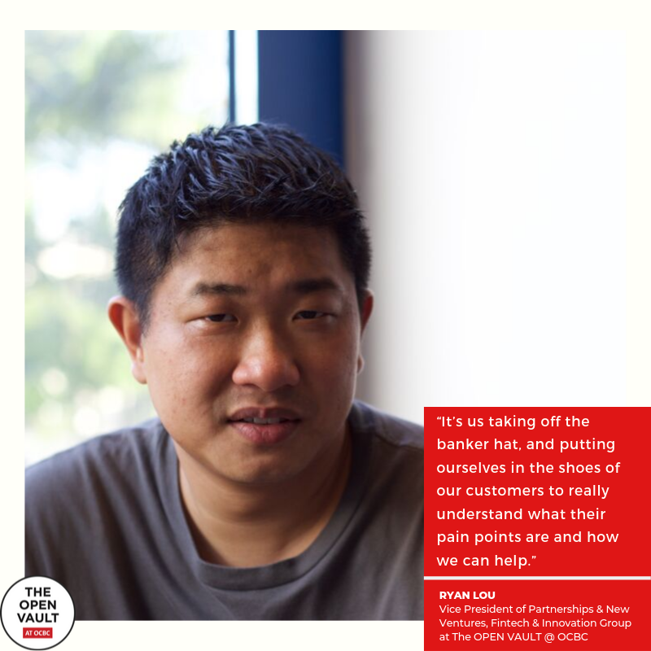

Forget Me Not:
Enabling Festival 2019
If you have met one person with dementia, you have only met one person. Each individual will talk, act, remember and behave differently, not simply because of what stage of dementia they are in, but because of who they are.
Dementia does not dent the human desire for a normal and dignified life, nor should it reduce anyone’s rights as unique social beings deserving of inclusion, respect and trust. Singapore is emerging as a key node in what is a global epidemic of dementia that primarily affects seniors. The Open Vault at OCBC (TOV) has taken steps to support community partners helping those living with this condition – and their families.
In its approach to helping customers with pain points beyond banking, TOV takes the admirable approach of first removing the ‘banker hat’ and focusing on understanding the underlying problems customers face. Sometimes it is a result of inefficiencies in the industry, entrenched or traditional business models that have not been changed, or neglected and underserved customer needs.
“The growing cost of Healthcare is a problem that will affect individuals and families living in Singapore. Healthcare financing and coverage underpins this, but transparency and access to information for individuals to make better decisions on their health is important. Only by putting ourselves in the shoes of the customer, can we identify and co-develop solutions with our partners.” said Ryan Lou, Vice President of Partnerships & New Ventures, Fintech & Innovation Group at The Open Vault at OCBC.
“We know that to develop breakthrough solutions that are out-of-the-box, we need to look out-of-the-bank. Our goal is to make banking more rewarding for customers and we do that by playing a part in other aspects of the customer’s everyday lives, one of which is their health and well-being. Though they interact with us as their financial institution, we know their needs span a broader spectrum.”
In July, TOV supported Designathon We Engage 2019, a hackathon that brought members of the community together to collaborate and identify design solutions for persons with dementia and their caregivers. A core theme for this year’s Designathon is how to keep persons living with dementia engaged, with an emphasis on sound and hearing to evoke memories and trigger positive emotions. Mr Lou joined the likes of Ms Theresa Lee, Deputy Chief Executive Officer at the Alzheimer’s Disease Association, Ms Lee Lee Sian, Senior Occupational Therapist, Woodlands Integrated Health Campus and Mr Rishi Gupta Co-Founder of Silver Activities as part of the panel of judges for the dementia-focused section.
The prizes for the dementia-focused designathon was given out by Speaker of Parliament, Tan Chuan Jin.
In preparation for this year’s Enabling Festival, TOV sought to engage closely with community partners, and help the participants take their ideas closer to commercialization. The Designathon, focused on potential solutions not only for those diagnosed with dementia now, but also those showing symptoms (e.g. problems with recent memory, commonly misplacing objects and facing difficulty in communicating with others). The projects that stood out were those that arrested the deterioration the condition causes by engagement.
The hackathon saw many great ideas contributed by the broader community and those living with Dementia. From students to retirees, the participants proposed impressively creative solutions from various perspectives, shedding light on how a spectrum of problems and solutions for different focus groups can be addressed.
For example, a group of students developed a soft toy plushie for patients to help trigger reminders for patients, such as taking their medication or to simply take a walk. On a more tech-focused front, one idea enabled family members to record phrases that can be played back to more severe dementia patients that ask for their loved ones every day. This helps simulate a “conversation” between them and their family. Solutions catered for patients’ families were also created, such as an educational booklet for young children to help build their understanding of dementia and what their elderly relatives are going through.

“Solving pain points beyond banking requires us to work with new partners and learn from the
perspectives of different people in the industry.
Sitting on the judging panel with industry experts from the Alzheimer’s Disease Association,
Woodlands Integrated Health Campus, was an eye opening experience that helped us hone and identify
the biggest challenges,” said Mr Ryan Lou. “We want to create meaningful partnerships that can bring
to life practical community solutions that empower individuals and their families to enjoy their
lives outside the disease.”
Diagnosing, treating, and managing dementia brings many challenges. There is extra emotional pressure on family members who are also their loved ones’ caregivers, and financial obligations for family members who hire external caregivers. The post-hospitalisation and post-treatment journey is equally important, if not more, than the treatment itself.
We have a world-class healthcare system, but it will be tested by the growing ageing population and rise of early onset chronic disease. Banks need to go beyond banking and plug into these growing social needs to do better for our customers. Dementia does not only affect the individual, but their families, support systems and society as a whole, and banks need to be prepared to be there every step of the journey.